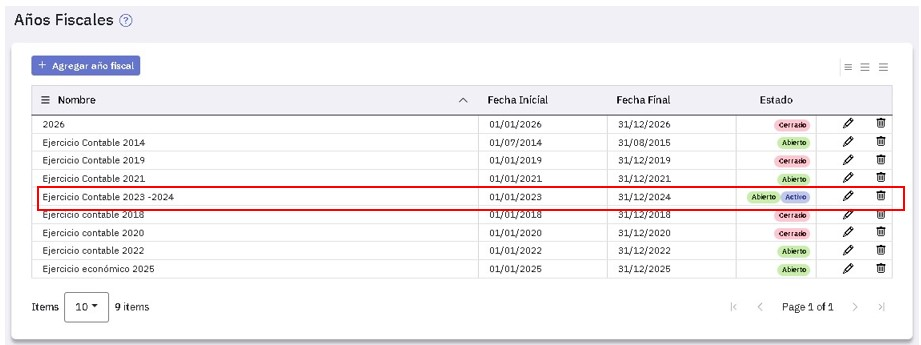
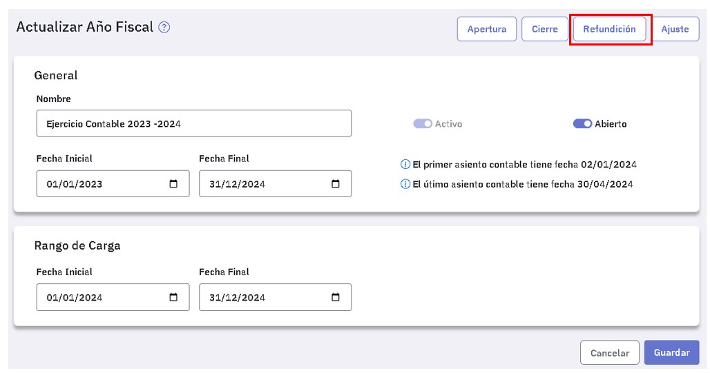
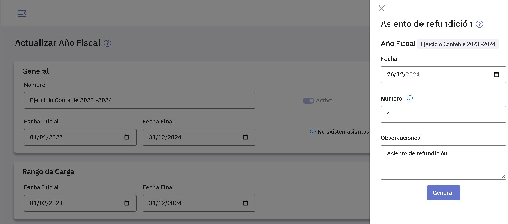

Asientos de refundición
El asiento de refundición de un centro de costos se genera en forma automática y tiene por objeto cancelar contablemente las cuentas que se administran por dicho centro de costos de modo que las mismas queden con saldo cero. Para ello se registran débitos en las cuentas con saldo acreedor y créditos en las cuentas con saldo deudor, por los mismos importes, utilizando como contrapartida a la cuenta de refundición.
Para generar el asiento de refundición tenés que ingresar al punto "Año fiscal", asegurarte que el ejercicio económico esté activo y abierto y luego editarlo:

Luego presioná el botón .

Tenés que completar los datos que se abren en la ventana de la derecha.

Indicá la fecha a asignar a cada uno de los asientos, el número a partir del cual se numeran (ofrece el próximo número de asiento libre) y el texto a incluir en los encabezados, te ofrece "Asiento de refundición" y podes cambiarlo.
Finalizada la tarea se genera un asiento por cada uno de los centros de costos definidos.
En este ejemplo te mostramos dos de los asientos generados.
{kind=link}
El proceso de generación recorre todo el año fiscal y tiene en cuenta todos los asientos que no se han refundido en procesos anteriores.
Si, por ejemplo, se genera un asiento de refundición a mitad del ejercicio y otro a fin de ejercicio, éste último solo considera los asientos no contemplados en el primer proceso de generación.